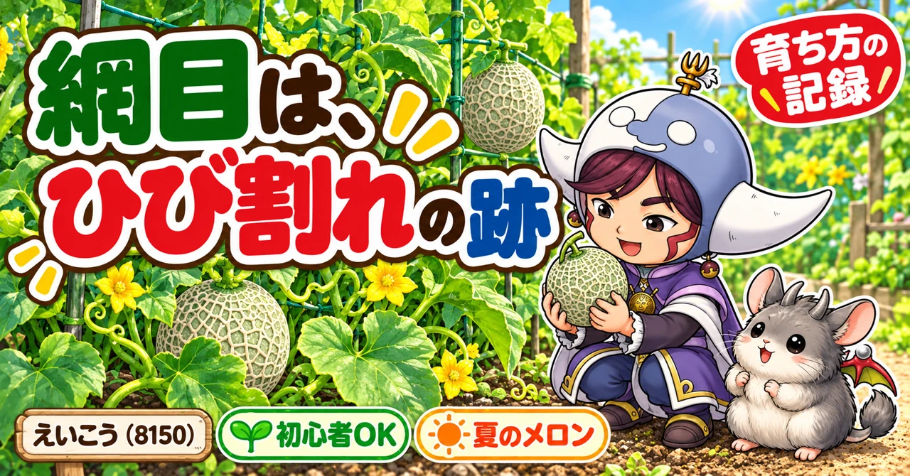
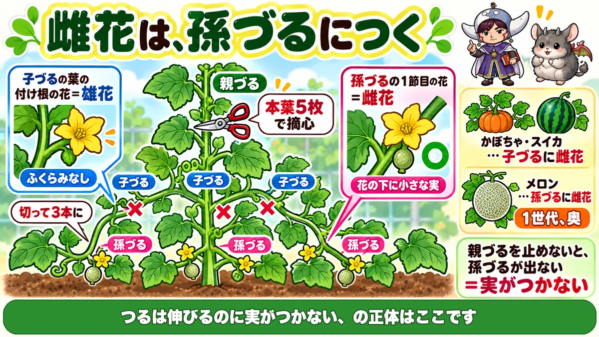
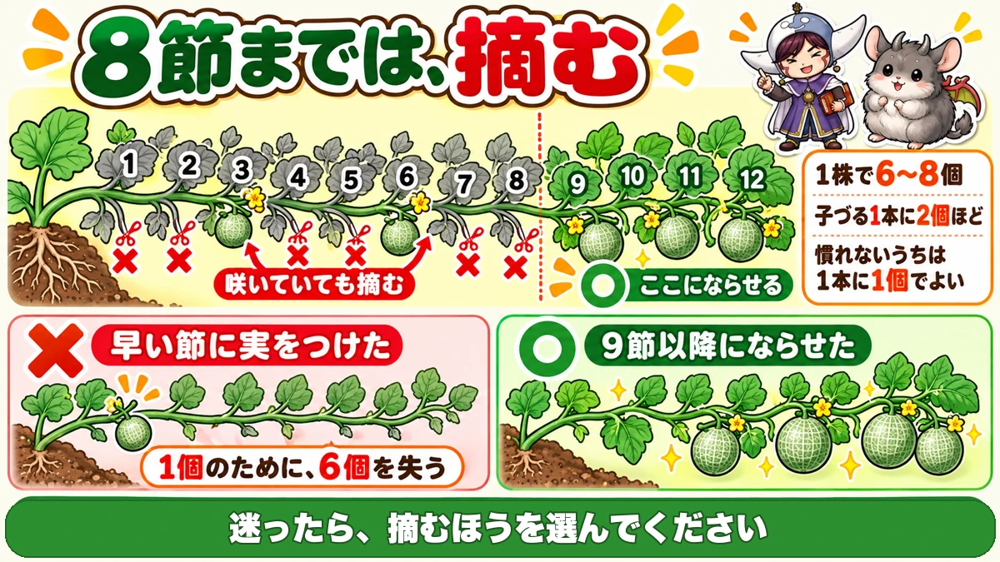
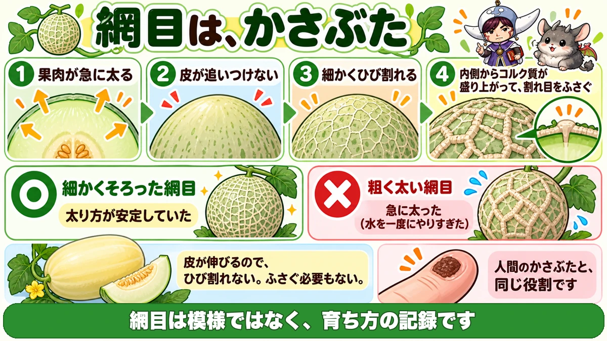

メロン栽培の調べ物帳｜つるの整理・授粉・甘く育てる段取り

どうも、8150（えいこう）です🌱 家庭菜園歴8年、理科の教員免許を持っていて、有機・無農薬で野菜を育てています。
📖 この記事の目次
この記事で分かること
- 初めてのメロンは、網目の有無だけで選ばず、露地向けか、病気への強さはどうか、苗札を確かめて選びます。
- つるを整理するときは、最初の親づる、そこから出る子づる、その先の孫づるを見分けます。花をつける枝まで一律に取らないことが大切です。
- 小さな株に早く実を背負わせず、葉とつるを育ててから着果させます。残す個数は品種の表示を優先します。
- 授粉は朝を基本にしつつ、実際に花粉が出ているか確認します。授粉日を残すと収穫の判断に使えます。
- 水と肥料は、苗を根づかせる時期、実を育てる時期、収穫を待つ時期に分けて考えます。しおれたら何でも水、とは限りません。
- 収穫は日数と外観を組み合わせて判断します。追熟で香りや食感は変わっても、早採りした実を十分甘くする約束はできません。
メロンは「つるが伸びた！ 花も咲いた！」のあとに、もうひと仕事ある作物です。うれしくて全部の実を残したくなりますが、葉の数と根の力には限りがあります。実を増やす楽しさと、収穫まで株を保つ段取りを、ここで一緒に整理しましょう。
みなさんが今知りたいのが『苗を植える準備』なら手順の前半へ。『花はあるのに実が育たない』なら症状の章へ。『いつ採ればええんやろ』なら収穫の手順とFAQへ進んでください。つるの名前は最初ちょっとややこしいですが、大丈夫。根元から一本ずつたどれば見分けられます☺️
早見：メロンの育て方（ひと目で分かる数字）
予定を立てるための数字
- 種まきの暦：3月下旬〜5月中旬という家庭菜園向け品種の説明があります。これは一つの栽培例の範囲で、全国・全品種の適期ではありません。地域別の種袋の表示を先に読みます。※1本のみ
- 苗を植える暦：中間地では遅霜が終わる5月を軸に考えます。5月11日の植え付け、5月中旬の苗購入という実例があります。寒い地域は暦だけを移さず、当地の適期を確かめます。
- 発芽に向く温度：25〜30℃とする説明、28〜30℃とする説明があります。『25℃なら必ず同じ日数で発芽する』という読み方はしません。
- 芽が出るまで：4〜6日と5〜7日の説明があり、合わせるとおおむね4〜7日。温度や用土の状態が違えば、実際の進み方も変わります。
- 植える苗の大きさ：本葉3〜4枚、4枚程度、4〜5枚と説明が分かれます。本葉3〜5枚の若い苗を確認する目安です。種まきから約35日という実例もあります。
- 株間：80cmで植えた例があります。根とつるを広げる余裕が必要で、狭い場所へそのまま詰め込む数字ではありません。※1本のみ
- うね幅：幅180cmのマルチを使い、うね端から40cmに苗を置いた例があります。ただし180cmはマルチの幅です。うねの上面幅と読み替えず、つるを広げる場所と通路を別に確保します。※1本のみ
- 元肥：植える前に準備します。全体に入れる方式と植え穴付近へ入れる方式がありますが、共通の量は確認できません。前作の施肥と今回の表示量を合わせて考えます。
- 親づるを止める目安：本葉4〜5枚、5枚、5〜6枚、6〜7節という説明があります。5枚前後がよく出る目安で、苗札の仕立て方があればそちらを優先します。
- 残す子づる：2〜3本、3本、3〜4本、4本という説明があります。標準的な整理の幅は2〜4本。場所と品種の条件をそろえて選びます。
- 着果させる位置：8〜11節付近、または9節以降という説明が中心です。1〜5節の孫づるを取る別例もあり、同じ数え方かどうかまで確認が必要です。
- 残す実：子づる1本につき1個、1〜2個という説明と、小玉品種で1株6〜8個、別の品種で10〜15個という説明があります。枝あたりと株あたりを混ぜないこと！
- 人工授粉の時刻：晴れた朝の9時ごろまで、10時ごろまでという説明があります。花粉の出方を見て作業し、時計だけで成功・失敗を決めません。
- 追肥の区切り：花が咲くころと実が卵ほどになるころの2回、植えて約1か月後とその約3週間後、約2週間おきなどの方法があります。後半は足さない方針もあります。
- 着果から収穫：受粉後40〜45日、成熟43日前後、48日程度の品種別の説明があります。『メロンは全部40日』とはまとめず、苗札に書かれた起点と日数を読みます。
- 収穫の暦：7月〜8月中旬という家庭菜園向け品種の例があります。まいた日・地域・品種で前後します。※1本のみ
- 連作の間隔：ウリ科を3〜4年作っていない場所を選ぶ説明があります。この年数は一つの情報源の目安で、病気があった土でも年数だけ守れば安心という意味ではありません。※1本のみ
苗札に書き写しておきたいこと
- 品種名と、露地向け・家庭菜園向けの表示
- 種まき・植え付けの地域別の適期
- 推奨の仕立て方と、株あたりの標準着果数
- 収穫日数を数え始める日が、授粉日なのか別の起点なのか
- 熟したときの色と、へた周りの変化
札は植えた日に外して終わりにせず、写真でも残しておくと便利です。あとで実ができてから「これ、黄色になる種類やったっけ？」となると、収穫の判断が難しくなります。数字を覚えるより、自分の苗の情報をなくさない方が役に立つんですよね。
この早見は、違う条件の数字を一つの栽培へ全部盛りするための一覧ではありません。『子づるを多く残す』『各枝にも多く着果させる』『追肥も頻繁にする』を別々の説明から集めると、どの方法よりも株の負担が大きくなることがあります。一つの仕立て方を軸にして、不明点をここで確かめてください。
作業の手順（時期の順）
1．品種と育てる場所をセットで決める
- 地面につるを広げる『地ばい』か、支柱やネットへ伸ばす『空中栽培』かを決めます。
- その場所が露地なのか、雨よけを用意できるのか確認します。
- 苗札で家庭菜園向け・露地向け・病気に比較的強いといった条件を探します。
- つるの整理、残す実の数、収穫サインが分かる品種を選びます。
初めてなら、表面がつるっとしたノーネット系を入り口にする考え方があります。一方、家庭菜園に向く小玉ネット系を選ぶ考え方もあります。網目のある見た目に憧れるの、分かります。ただ、贈答用の大玉と同じ仕上がりをいきなり目指すと、必要な管理もぐっと増えます。
ネットかノーネットかの二択だけで終わらせず、自分の場所に合う表示を読みましょう。病気に比較的強い品種でも、長雨や根の傷み、実の負担が重なれば枯れることがあります。『作りやすい』は、世話が要らないという意味ではありません。
地ばいはつるを広げる面積が必要です。空中栽培は面積を立体的に使えますが、つるを支え、実も別に支える作業が増えます。どちらにも仕事があります。畑へ行ける頻度や支柱の準備まで含めて決めると、途中で慌てにくくなります。
2．種から育てるなら、発芽とその後を分けて管理する
- 温度を保てる場所を先に用意し、種袋の地域別の適期に合わせてまきます。
- 育苗の実例では10.5cmポットを使い、約1cmの深さへ種を横向きに置いています。
- 土をかぶせたあと水を与え、乾燥と低温を防ぎます。
- 芽が出たら覆いを外し、光が届く状態へ切り替えます。
- 土の湿りを見ながら水を与え、本葉3〜5枚程度の若苗で植える計画にします。
芽を出すまでの温かさと、芽が出たあとの光は、別の仕事です。発芽を守る覆いをそのまま残してしまうと、ひょろっと長い苗になりやすくなります。『覆っておけば安心』で見なくなるのが、ちょっと怖いところなんですよね。
発芽温度は25〜30℃と28〜30℃の二つの説明があります。発芽までの日数も4〜6日と5〜7日で幅があります。日数は発芽を点検する目安にし、予定の日に出ないからとすぐ水を追加せず、温度と湿りの両方を確認します。
晴れた午前に軽く水を与え、曇りで土が湿っていれば省く管理例があります。これは育苗中の例で、畑の大株へ『毎朝必ず一回』と移す数字ではありません。苗を買って始める場合は、ここまでの温度管理を省けます。種からが偉い、苗からが手抜き、という話ではないので、自分が続けやすい入口で大丈夫です。
3．苗売り場では、背の高さより株の締まりを見る
- 茎が細く長く伸びすぎていないか見ます。
- 葉色と葉の広がりを見て、病斑や食べられた跡がないか確かめます。
- 苗札の品種情報と、自分の栽培計画を照らし合わせます。
- 接ぎ木苗か、自根苗かも確認して記録します。
接ぎ木苗は、別の株の根側につないだ苗です。病気への強さや育てやすさを期待して選ぶ考え方がありますが、メロンなら全部接ぎ木必須、とは言えません。自根苗で育てた例もあります。苗の形と健康状態を見ずに、『接ぎ木』という表示だけで決めないようにします。
売り場で大きく見える苗ほど欲しくなりがちですが、背丈と丈夫さは同じではありません。伸びすぎた茎に、風や虫の負担が重なると初期の生育へ響きます。植える準備がまだなら、買うことを先に急がず、適期に状態のよい苗を選べる段取りを考えます。
4．日当たりと水の逃げ道を確認し、元肥を準備する
- 前にウリ科を育てた場所か調べ、同じ仲間を続けない計画にします。
- 雨のあと水がたまる場所を避け、日当たりと排水を確認します。
- 前作までに入れた肥料を振り返り、今回の元肥を決めます。
- 全体に入れる方式か、植え穴付近を中心にする方式か整理します。
- 根へ肥料が直接触れないよう土を介し、つると通路の場所を確保します。
元肥は植える前の肥料です。今回の材料には、どのメロンにも当てはめられる重さや土の酸度の数字はありません。『ひとつかみ』という実演の量を、手の大きさも成分も違う肥料へそのまま移すことは避けます。
全体へ入れたうえに植え穴にも足す場合は、両方を合計して考えてください。別々の作業として見ると二重に入れやすいんです。苗札や使用する肥料の表示を確認し、根のすぐそばへ濃い肥料を集めないようにします。資材名が確かめられていないものを、別の商品名へ言い換えてすすめることもしません。
病気対策を考えるとき、葉だけに目が向きがちですが、植える前の排水も大事です。雨のあとにずっと湿る場所へ植えてから水を控えても、土の中の水はすぐには抜けません。水やりを上手にする前に、水が抜ける場所を用意する、という順番です。
5．根鉢を崩さず、遅霜の心配がなくなってから植える
- 植え穴へ先に水を入れ、植える位置の土を湿らせます。
- ポットの苗にも吸水させ、根鉢が乾いたままにならないようにします。
- 茎を引っ張らず、ポットから根鉢をそっと外します。
- 土と根がまとまった形を保って植え穴へ置きます。
- 周囲の土をなじませ、強く押しつぶさないようにします。
- 植えたあとにも水を与え、根づくまで極端に乾かしません。
根鉢は、根が回ったポットの土のまとまりです。ほぐして伸ばしてあげたくなっても、メロンでは根を傷めない扱いを優先します。植え替えは、苗が新しい土で水を吸えるようになるまでのつなぎ仕事。そこへ寒さや乾燥が重なると負担が増えます。
植える時期は、売り場に並んだ日ではなく、当地の遅霜と適期で決めます。中間地の5月の実例を寒い地域へそのまま当てはめないことも大切です。葉が育つ温かさが続くか、夜の冷え込みが残っていないかを確認してください。
6．雨よけを使うなら、換気と授粉まで予定に入れる
- 低温や長雨への備えが必要か、品種と場所を見て考えます。
- 覆う場合は、暖かい日の換気をできる形にします。
- 中の葉が長くぬれていないか、風が通るか点検します。
- 花が咲くころには、虫が入れる開放状態か、人工授粉を行うか決めます。
ビニールトンネルを梅雨明けまで残す説明と、強い品種ならトンネルなしでも育てられる説明があります。ここは『屋根さえあれば成功』でも『露地なら必ず失敗』でもありません。覆いの有無と、その中の状態を分けて見ます。
遅霜の心配がなくなった5月に、裾を20〜30cm開ける栽培例があります。この高さを季節や天候を問わず固定するのではなく、密閉せず換気するための例として考えます。雨を防げても、中が蒸れて葉が乾かないなら、別の困りごとが増えます。
7．親づるを止め、使う子づるを選ぶ

- 根元から最初に伸びた一本を探します。これが親づるです。
- 親づるの葉の付け根から伸びる枝を探します。こちらが子づるです。
- 本葉5枚前後を一つの目安に、指定の仕立て方に合わせて親づるの先端を摘みます。
- 出てきた子づるのうち、元気なものを2〜4本の範囲で選びます。
- 空中栽培なら、伸びた枝が折れないうちに支柱やネットへ導きます。
摘心は、つるの先端の成長する部分を取ることです。全部の葉を切り落とす作業ではありません。親づるをずっと伸ばすより、使いたい子づるへ展開させるために行います。勢いのある先端を取るので、最初はなんかもったいなく感じますよね。
本葉は、発芽したときの双葉とは区別して数えます。説明には4〜5枚、5枚、5〜6枚、6〜7節と幅があります。『本葉5枚前後』は整理の目安で、すべての苗を同じ日に切る号令ではありません。苗札の仕立て方があれば、そちらと苗の状態を照らし合わせます。
子づるは全部残すと混み合いやすく、少なくしすぎると、予定の実を育てる枝や葉も減ります。二本仕立ての実数だけを、四本仕立ての計画へ移すのも避けましょう。残した枝の数は、その後の着果数を考える土台になります。
8．孫づるを見分け、若い株に実を急がせない

- 残した子づるを根元からたどり、葉が出る位置を順に数えます。
- 子づるの葉の付け根から伸びる孫づるを確認します。
- 一般的な仕立てでは、低い位置の孫づるを整理し、株づくりを先に進めます。
- 着果候補は8〜11節付近、または9節以降という目安を、苗札と照らし合わせます。
- 実をつける孫づるまで全部取らず、雌花を探せる状態を残します。
節は、葉や枝が出るつる上の区切りです。長さを何cm測るかより、どの枝の葉を数えているかが大事です。親づるを数えた数字と子づるを数えた数字を混ぜると、整枝の位置がずれます。
基本として孫づるへ着果させる説明が多い一方、子づるにも雌花がつくとする説明があります。そこで『孫づる以外にある雌花は全部不要』とは決めません。品種の仕立てを確認し、実際の花の下に小さな実があるか見てください。
低い位置にできた小さな実は、見つけると残したくなります。でも、株が小さいうちに実を育て始めると、その後の枝や葉を育てる余力が減ることがあります。早い一個を取るのは、今後の収穫へ向けた準備です。『花が咲いたから、もう実を育ててよい』とは限らないんですよね。
9．花粉を確かめて人工授粉し、日付を残す
- 花の下に小さなメロンの形がある雌花を探します。
- 雄花を確認し、花粉が出ているか見ます。
- 雄花の花びらを外し、花粉がある部分を雌花の中心へやさしく触れさせます。
- 花を強く押したり、何度もこすったりしないようにします。
- 授粉した日を記録し、その後に小さな実が育つか点検します。
中心の名前は、雄花が『葯』、雌花が『柱頭』です。漢字が並ぶと急に理科っぽくなりますが、作業は花粉を受け取る場所へ届けること。押す力を競う仕事ではありません(笑)。花が小さく扱いづらい場合は、筆で花粉を移す方法もあります。※1本のみ
朝の9時まで、10時までという二つの説明があります。まずは暑くなる前の朝に見ます。ただし、暑い朝は早く花粉が出る一方、曇った日は午後に出始める説明もあります。時刻を守ったかだけでなく、実際に花粉があるかを見ましょう。
トンネルの中へ虫が入りにくい場合は、自然の授粉を待つだけでは実が育たないことがあります。花の有無、虫の出入り、花粉の状態を順に確かめてください。授粉の日付は収穫までの日数を使うための実務上の記録です。作業した日と、実が育つのを確認した日を分けると、あとで判断しやすくなります。
10．残す実を決め、重さを支える
- 苗札の標準着果数と、残した子づるの数を確認します。
- 育ち始めた実を数え、枝ごとの偏りも見ます。
- 初心者で品種情報がない場合は、子づる一本に一個から負担を抑える考え方を使います。
- 地ばいでは、実を土へ直接触れさせないよう台座を用意します。
- 空中栽培では、重くなる前に実を別に支え、細いつるだけに重さをかけません。
実の数は、目標の大きさや品種によって大きく違います。一本に一個へ絞る方法と、小玉で株あたり多く残せる方法は、別の条件の話です。たくさんできた実を全部残すと、株が最後まで保つか、甘さを十分に蓄えられるか、別の問題が出てきます。
空中の実をネットなどで吊るす方法は一つの説明で確認できます。※1本のみ。吊るし始める共通の直径や重さは分からないので、何cmになるまで待つとは決めません。枝が引っ張られてから慌てるより、重くなる前に支える段取りにします。
地面に置く実は、下側の湿気や傷みも確認します。台座の材質や実を回す頻度について、全品種共通の指定はありません。他のウリ科の栽培で出てくる日数を、そのままメロンへ移さないようにします。鳥獣害がある場所では、甘くなる時期に実を守る対策も考えます。
11．水と追肥は、生育段階を確かめてから決める
- 植えた直後は、根づくための水を確保します。
- 生育中は土の湿り、雨、葉とつるの状態を一緒に見ます。
- 追肥を考える前に、元肥と前に足した肥料を確認します。
- 花の時期や実が卵ほどになった時期を区切りにする方法では、その時点の株の勢いを見ます。
- 実が大きくなる後半や収穫前は、実をもっと大きくしたいからと水や肥料を急に増やしません。
先端が強く上を向くつるを、肥料が効きすぎている目安として見る説明があります。※1本のみ。ただし、先端一か所で全てを診断することはできません。葉の状態、これまでの施肥、着果数、土の湿りと合わせて、追肥を見送るか考えます。
追肥をする場所については、株元だけでなくマルチの外や通路側を使う説明があります。根が広がった株の管理です。植えたての小苗にも同じ位置・量で与える意味ではありません。どの肥料でも同じ量にできるわけではないので、表示と全体の施肥計画を確かめます。
水を控える時期として着果から約一か月が挙げられますが、これは一つの説明です。※1本のみ。その説明でも株を細かく観察する必要が示されています。『三十日を過ぎたら、しおれても水を絶対に与えない』という手順にはしません。甘くするために根を弱らせてしまったら、収穫までの仕事が続きません。
12．虫と病気は、小さい変化のうちに探す
- 苗が小さい間は、葉の食べられた跡とウリハムシを重点的に見ます。
- 子づる・孫づるの先端や葉裏を見て、アブラムシの集まりがないか調べます。
- 白い粉や斑点のある葉を見つけたら、周囲の葉まで点検します。
- 病気が疑われる葉を取り除き、畑の外へ出します。
- 不要な枝や混み合う下葉を整理し、風通しと泥はねを見直します。
成虫をペットボトルの口へ落として捕まえる方法があります。※1本のみ。手で追い払って別の株へ移るだけなら、畑の被害は減りません。見つけた虫をどう取り除くかまで考えて作業します。
うどんこ病などで傷んだ葉は、白い粉を取ったら元通りの元気な葉になるわけではありません。無農薬では、起こさない環境づくりと早めの除去が中心になります。病気を見つけてから効く確実な家庭用の治療液、というものをここで作って紹介することはしません。
枝の整理は、風を通すために行います。ただし実を育てる葉まで一気に減らすと、別の負担になります。不要な枝と病葉を見分けて進め、見た目をすっきりさせることだけを目的にしないようにします。
13．収穫は、日数と複数のサインを重ねる
- 授粉の記録と苗札から、収穫が近いかを確認します。
- その品種の熟した色に近づいているか見ます。
- へた周りのひびや離層が目安になる品種か確認します。
- 実の近くの葉や巻きひげの変化、香りを合わせて見ます。
- 雨割れや鳥獣害の心配も考え、採る時期を判断します。
緑からクリーム色、黄色、黄金色へ変わる実例がありますが、全てが同じ色になるわけではありません。緑色のまま熟す品種へ、黄色くなるのを待つ方法は当てはまりません。苗札の写真と説明が、ここで役に立ちます。
へたの周りに離層という変化が出て、熟すと自然に外れる品種もあります。空中栽培なら、落果に備えて実を支える必要があります。ただ、自然に落ちるまで待つことも全品種共通ではありません。外れない実を無理に引っ張る判断は避けます。
畑で十分熟すまで置く方法と、雨や獣害を考えて少し早めに採る方法があります。どちらを選ぶにも、標準日数より大幅に早い実を追熟頼みで採ることはおすすめできません。収穫を早める判断と、未熟な段階で切り上げる判断は分けて考えましょう。
14．追熟・食べごろ・片づけを別々に考える
- 追熟させる丸ごとの実は、風が通る涼しい場所に置きます。
- 固定の日数だけを待たず、香りと軽く触れたときの変化を確認します。
- 食べごろになったら冷やし、早めに楽しみます。
- 切ったものは冷蔵し、早めに食べ切ります。
- 栽培を終えるときは病気のつるや葉を畑へ残さず、次もウリ科を続ける計画にしません。
追熟の説明には約一週間という例があります。一方、別の数字は字幕が崩れていて、日数を確定できません。何日置けばどの品種も食べごろ、と決める材料はありません。香りと果実の変化を見て判断します。
株が収穫前に枯れた実を一週間置いても、甘みが弱かった例があります。※1本のみ。追熟は収穫前の生育不足を全部取り返す工程ではありません。育てている途中に株を保つことが、最後の食べごろにもつながります。
片づけ後の具体的な野菜や、土へ足す資材の共通量は今回の材料からは決められません。まず病気の残りを持ち越さないこと、同じウリ科を続けないことを押さえます。栽培記録には、品種、残した実数、授粉日、収穫日、途中で出た症状を残すと、次の計画で見直す場所が分かります。
失敗の見分け方（症状→原因→やること）
つるは長くなったのに、雌花が見つからない
- 症状：葉とつるは増えるのに、花の下に小さな実がある雌花が見当たりません。
- 考えられる原因：親づるを伸ばし続けている、雌花をつける孫づるまで全部整理している、品種の仕立てと違う管理をしている可能性があります。
- やること：根元から枝をたどり、親・子・孫の区別を確認します。親づるの摘心と残した子づるを見直し、着果候補の枝が残っているか調べます。
『脇から出た枝は取る』だけを覚えていると、必要な孫づるまで取ってしまいます。枝が多いか少ないかより、どの枝を残したかが問題です。花がないから肥料不足、と先に決めず、つるの構成を調べてください。
最初の実だけ育ち、後の実が続かない
- 症状：株元に近い位置の実が大きくなり、その後に花や実が増えても育ちません。
- 考えられる原因：小さい株へ早く着果させ、枝や葉を育てる前に実の負担がかかった可能性があります。
- やること：最初の着果位置、葉の育ち、残した実数を確認します。今ある実を全て育てる前提を見直し、品種の標準着果数へ近づけます。
低い位置の実が一個大きくなったことだけで、管理全体が合っていたとは判断できません。その一個を育てる力と、次の枝葉を増やす力がぶつかることがあります。来季は、株づくりを先にする着果位置の計画を残しておくと役に立ちます。
雌花は咲くのに、小さな実が大きくならない
- 症状：花の下に小さな実が見えますが、授粉したあとも太りません。
- 考えられる原因：花粉が出ていないときの作業、花を傷める強い接触、雨よけ内へ虫が入らないことなど、授粉の問題が候補です。
- やること：雄花の花粉を確認し、次に咲く雌花でやさしく授粉します。トンネルの開放状態と、虫が花へ来ているかも見ます。
小さなメロンの形は、授粉前にも見えます。見つけた瞬間に『実がついた！』と数えると、その後の着果数を多く見積もってしまいます。花があった日、授粉した日、実が太り始めた日を分けて見ると、どこで止まったかが分かりやすくなります。
葉に丸い食べ跡が増え、苗が弱る
- 症状：葉に食べられた跡が増え、とくに小苗の葉が減っています。
- 考えられる原因：ウリハムシ成虫による食害が候補です。株元から急に弱る場合は、幼虫による根や茎の被害も候補に入ります。
- やること：葉と株元を点検し、成虫がいれば取り除きます。葉の被害だけで根の状態を決めず、土の過湿やほかの症状も確かめます。
大株なら残る葉でも、小さい苗では一枚の損失が大きくなります。穴が増えたか、葉そのものが減ったかを見てください。成虫を追い払うだけで安心せず、他の株へ移った虫も確認します。
先端に小さな虫が集まる
- 症状：子づるや孫づるの成長する先端に、アブラムシが見つかります。
- 考えられる原因：若い部分に虫が増えている可能性があります。
- やること：その先端だけでなく、ほかの枝先と葉裏も確認し、早いうちに取り除きます。
アブラムシについての具体的な点検箇所は、一つの情報源の説明です。※1本のみ。『一匹だから、まだええかな』と見送るより、次に見る枝を決めておく方が対処しやすくなります。ここから独自の散布液や希釈率を作ってすすめることはしません。
葉の表面に白い粉が出る
- 症状：葉へ粉をふったような白い部分が現れます。
- 考えられる原因：うどんこ病が疑われます。混み合う葉や枝、風通しなども確認する条件です。
- やること：傷んだ葉を取り除いて畑の外へ出し、不要な枝と下葉の混み方を見直します。
粉が見えた葉を一枚取ったら終わり、ではなく、隣の葉や奥に隠れた葉も見ます。病葉は元通りにならないため、広がりを小さくすることと、残る葉を守る環境づくりを考えます。実を育てる健全な葉まで、まとめて取らないようにします。
長雨のあと、葉の斑点が広がる
- 症状：梅雨や長雨の時期に斑点のある葉が増えます。
- 考えられる原因：べと病などの病気が候補ですが、斑点という見た目だけで病名は確定できません。葉がぬれ続ける状態、密植、泥はねを見ます。
- やること：症状のある葉と周囲を確認し、風通し、雨よけの換気、泥はねの防止を見直します。
雨を止められなくても、葉が重なっている場所や閉じた覆いは調整できます。屋根があるのに広がる場合は、屋根の有無だけで考えず、中の葉が乾くかを見ます。病名が確かでないまま、その病気専用の対策を決めつけないことも大事です。
つるの先が強く立ち、葉ばかり増える
- 症状：つるの勢いが強く、先端が上を向いています。
- 考えられる原因：肥料が効きすぎている見方があります。ただし、先端だけで断定できる診断ではありません。※1本のみ
- やること：追肥をいったん見送り、元肥・追肥の履歴と着果状況を確認します。実が育たない理由として、授粉や枝の整理も別に点検します。
大きな葉を見ると、順調だからもっと肥料を、となりやすいんですよね。つるを伸ばす段階と実を育てる段階を分け、増えた葉が予定の着果へつながっているかを見ます。勢いが強いことと、甘い実ができることは、そのまま同じ意味にはなりません。
葉がしおれる、収穫前に急に株が弱る
- 症状：つるや葉がしおれ、実が大きくなった株が急に弱ることがあります。
- 考えられる原因：乾燥、過湿、根の病気、虫による根の被害、実のつけすぎ、肥料不足などが候補です。
- やること：土が乾いているか湿り続けているかを先に見ます。株元、葉の病斑、残した実数、これまでの施肥を順に確認し、水や肥料を一律に追加しません。
収穫直前に枯れた例では根腐れ系の病気が疑われていますが、診断は確定していません。※1本のみ。同じようにしおれたから自分の株も同じ病気、と決めることはできません。ぬれた土で根が弱っている株へ、乾燥だと思って水を足すと判断が逆になります。
実がある株は、しおれを見ると焦ります。まず『土』『株元』『葉』『実の数』の順に確認するだけでも、何を追加するか決める前の手がかりになります。水切りの日数を守ることだけを優先して、明らかな乾燥を放置するのも避けます。
実に大きな割れが入る
- 症状：表皮の細かい網目とは違う、大きく開いた割れができます。
- 考えられる原因：実が太る時期の急な吸水、多い追肥による急成長、採り遅れなどが候補です。
- やること：直前の雨と水やり、追肥、苗札の収穫サインを確認します。残る実への急な水・肥料の追加を避け、雨への備えも見直します。
網目が出る品種だから、どんな割れも正常とは言えません。小さなひびがふさがってできる模様と、大きく開く裂け目は分けます。網目を増やしたくて水を急に増やすような操作はしないでください。
追熟したのに、思ったほど甘くない
- 症状：置いて香りが出ても、食べると甘さが弱いことがあります。
- 考えられる原因：早すぎる収穫、収穫前の枯れ、実のつけすぎ、後半の水や肥料の多さなどが候補です。
- やること：追熟日数を延ばすだけで解決しようとせず、授粉から収穫までの日数、株の健康、残した実数を振り返ります。
香りの変化と、糖を十分にためられたかは別の確認です。次の栽培へ活かすなら『何日置いたか』だけでなく、『株についた状態でどれだけ育ったか』を残します。追熟に任せる前の段取りへ戻ることが、次の判断につながります。
説明が分かれていること
最初の品種は、ノーネットか小玉ネットか
- Aという説明：ノーネット系はネット系より育てやすく、初挑戦の候補になります。
- Bという説明：家庭菜園向けの小玉ネット系にも、比較的育てやすい選択肢があります。
- どう考えればよいか：網目だけで難易度を決めず、露地向け・耐病性・標準着果数を確認します。大玉の高級メロンの管理を、小玉へそのまま移す必要はありません。
どちらかの説明を間違いとして消すより、候補の品種と育てる環境をそろえて比べます。ノーネットの作りやすさが、すべての病気への強さを保証するわけでもありません。雨よけの用意や、つるを整理する時間も選ぶ条件に入れます。
発芽温度と日数は、どこまで一つにまとめるか
- Aという説明：発芽適温は25〜30℃、発芽は5〜7日とされています。
- Bという説明：28〜30℃、4〜6日という説明があります。
- どう考えればよいか：温度は説明ごとの幅を残し、日数はおおむね4〜7日と見ます。種袋の条件と実際の温度、用土の湿りを確認します。
数字の重なる部分だけを取って28〜30℃が唯一の正解、とする必要はありません。逆に下限の25℃だけを使い、温度が低くても四日で出るはず、と別の説明を組み合わせることも避けます。温度と日数は、同じ管理例の組で読みます。
植える苗と親づるの摘心は、葉が何枚のときか
- Aという説明：本葉3〜4枚の苗を植え、親づるは4〜5枚または5枚で止めます。
- Bという説明：植える苗は4〜5枚、摘心は5〜6枚、または6〜7節という方法もあります。
- どう考えればよいか：植え付けの大きさと摘心する段階を分けます。苗の本葉を確認し、使う品種の仕立て方に合わせます。
『五枚』という数字だけ覚えると、苗を買う時期、植える時期、摘心する時期が全部同じ話に見えてしまいます。何の作業の数字かまでセットにします。節と葉の枚数の表現差もあり、違う説明を完全に同じ数え方と決めつけないことが大切です。
子づるは二本、三本、四本のどれがよいか
- Aという説明：元気な2〜3本を選びます。
- Bという説明：3〜4本、または4本を残す例があります。広い地ばいで、摘心後は放任に近く育てる例もあります。
- どう考えればよいか：品種、広げられる面積、実を残す計画から選びます。つるの本数と実数は別々に決めず、一緒に考えます。
放任に近い例でも、最初の親づるは止めています。『放任』の一語を、種まきから収穫まで何もしない方法に広げないでください。狭い場所で同じように枝を伸ばすと、葉が重なり、虫や病気も探しにくくなります。
着果は、五節より上か、九節以降か
- Aという説明：八節までの孫づるを取り、九節から先で実を育てます。別例では八〜十一節が最初の実の位置です。
- Bという説明：一〜五節の孫づるを整理し、その上に残す説明があります。※1本のみ
- どう考えればよいか：数字が違うことは残したうえで、どの枝をどこから数えるか、品種と仕立ては同じかを確認します。標準的には、若い株へ早く実を背負わせないことを軸にします。
図の九節以降は、記事内で扱う基本的な仕立てを理解するための目安です。全品種に対する唯一の境界線ではありません。手元の品種に別の指定があるなら、その条件を先に確かめます。
一株に、いくつ残せるか
- Aという説明：大きさや甘さを狙って、子づる一本に一個を残します。慣れない場合に一本一〜二個とする説明もあります。
- Bという説明：小玉品種で株あたり六〜八個、別の家庭菜園向け品種で十〜十五個という説明があります。
- どう考えればよいか：枝あたりと株あたりを区別し、苗札の標準着果数を優先します。品種が不明なら、多収の例へ寄せず少ない負担から始めます。
栽培現場でたくさん数えられた実と、最後まで食べごろに育った実の数も同じとは限りません。『一株で二十個ほどできそう』という概算を、毎年の確定収量にはしません。実ができた数だけでなく、収穫まで株が保つかを見ます。
授粉は九時までか、十時までか
- Aという説明：晴れた朝の九時ごろまでに終えます。
- Bという説明：暑くなる前の十時ごろまでに行います。天候によって午後に花粉が出る説明もあります。午後の例は※1本のみです。
- どう考えればよいか：朝を基本に見に行き、雄花の花粉が出ているか確認します。時計の数字だけを成功の条件にしません。
朝早く行けば必ず花粉がある、とも限りません。作業可能な時間を決めておくことと、その場で花の状態を確認することの両方が必要です。雨よけの中で虫が働けるかも、授粉の成否に関わります。
追肥は定期的にするか、後半は止めるか
- Aという説明：約二週間おき、または植え付け約一か月後とその約三週間後に補います。
- Bという説明：花のころと実が卵ほどのころに補い、着果後半は足さない方針があります。
- どう考えればよいか：元肥、生育段階、つるの勢い、着果数をそろえて比較します。別々の方法を合わせ、すべての時期に足す計画にはしません。
前半の株づくりの説明と、収穫前の糖度を考える説明は、そもそも見ている段階が違います。弱い株に必要な補いと、強い株へさらに足すことも違います。肥料の形や成分を確かめず、回数だけそろえるのは避けましょう。
収穫前は断水するのか
- Aという説明：着果から約一か月後は水を控え、収穫直前には与えないとする説明があります。※1本のみ
- Bという説明：同じ説明の中にも、株を細かく見ながら水を与える必要が示されています。
- どう考えればよいか：完全断水を一律の作業にせず、乾燥と過湿を見分けます。急な大量給水や雨による変化を避け、株が働ける状態を保ちます。
水を控える管理を、植えた直後の苗へさかのぼって適用しないことも大切です。根づかせる時期と、成熟を待つ時期は条件が違います。鉢と畑でも土の乾き方が変わるため、日付だけで同じ判断にはできません。
畑で完熟させるか、少し早めに収穫するか
- Aという説明：畑で十分熟すまで待ち、色や香り、へたの変化を見ます。
- Bという説明：雨割れや鳥獣害を避けるため、少し早めに収穫して追熟させます。
- どう考えればよいか：苗札の日数と品種の熟し方を基準に、収穫を待つリスクを考えます。追熟を理由に大幅に早採りはしません。
追熟日数も約一週間の説明と、数字を確定できない説明があり、統一できません。『収穫の判断』と『採った後の食べごろの判断』は、別々の項目です。採った日から一定日数だけで、どの実も同じ食べごろになるとは言えません。
よくある質問
初心者でもメロンを育てられますか
家庭菜園向けの品種から始める道があります。ノーネット系や病気に比較的強い小玉ネット系が候補です。ただし、無農薬では難しさがある作物です。最初は数より、株を保って少ない実を収穫まで育てる計画にすると、見るところを絞れます。
プランターでも育ちますか
コンテナで子づるを二〜三本に整理する栽培例があります。ただし、全品種に使える容器の容量や土の量は今回の材料にありません。品種の鉢栽培への適性、仕立て方、標準着果数を確認し、地植えの多収の例をそのまま持ち込みません。
種と苗、どちらから始めるとよいですか
温度管理を省きたいなら苗から始める方が取り組みやすくなります。種からなら、発芽までの温かさと、発芽後の光の管理を用意します。育苗期間を日程に含め、種をまいた日を苗の植え付け日と同じ起点にしないようにします。
ネットメロンなら、どれも同じ管理ですか
同じではありません。家庭菜園向けか、露地向けか、どの程度の実数を想定するかで条件が違います。網目があるかどうかに加えて、苗札の仕立てと収穫サインまで見て選んでください。
接ぎ木苗でないと失敗しますか
自根苗で育てた例もあり、接ぎ木必須とは言えません。接ぎ木苗を選ぶ考え方はありますが、葉の健康、根を傷めない植え方、排水、着果の負担も確認します。接ぎ木という表示だけで、管理の代わりにはできません。
子づると孫づるが分かりません
根元から最初に出たつるを親とし、その葉の付け根から出た枝が子です。さらに子の葉の付け根から出た枝が孫です。枝の太さや長さでは決めず、どこから出たかをたどってください。一本だけ追うと、案外整理できますよ。
孫づるは全て取った方がすっきりしますか
全て取ると、実をつけるための枝までなくなる可能性があります。基本の仕立てでは低い位置の孫づるを整理し、着果させる位置の枝を残します。見た目のすっきり感より、必要な枝と葉を残すことを優先します。
雌花の下に小さな実があれば、授粉済みですか
その形は授粉前から見えます。実がある形を見つけたことと、授粉が成功したことは別です。作業後に実が太り始めるかを確認し、残す実数はその変化を見て判断します。
人工授粉は毎回必ず必要ですか
花へ虫が来て自然に授粉できる環境なら、必須と決める必要はありません。雨よけ内へ虫が入りにくい場合や、花が咲いても実が育たない場合は人工授粉を検討します。覆いの開放状態と花粉を先に確かめます。
大きくしたいので、実ができてから肥料を増やしてよいですか
大きさだけを見て追加するのは避けます。元肥、これまでの追肥、つるの勢い、実の数を確認してください。後半の多肥ではつるへ偏ることや、急な成長と実割れが問題になる説明もあります。
収穫前は、しおれても水を止め続けますか
一律には止めません。水を控える説明はありますが、株の観察も必要です。土が乾いているのか、湿っていて根が弱っているのかを調べます。しおれを見て、断水の継続か大量給水の二択にしないようにします。
実は何個まで残せますか
まず品種の標準着果数を確認します。子づる一本に一個という方法から、株あたり六〜八個、十〜十五個という品種の説明まで幅があります。苗札がなく初めてなら、少ない実数で負担を抑える方から考えます。
網目が細かいほど甘いですか
今回の材料から、網目の細かさだけで甘さを判断する根拠は確認できません。網目は実が太る途中の細かなひびがふさがった跡です。糖度や食べごろは、網目だけで判定しないようにします。
黄色くなるまで待てば収穫できますか
熟した色が黄色になる品種なら目安の一つです。ただし、全品種が黄色になるわけではありません。苗札の色、日数、へた周り、香りなどを重ねて判断します。一つの実例の色を、別品種へ移さないことが大事です。
追熟すれば、早く採っても甘くなりますか
未熟な実の甘さを十分に取り返せるとは言えません。香りややわらかさの変化があっても、株についた間の生育不足まで解消するわけではありません。収穫日数と外観を確かめ、追熟を早採りの理由にしないでください。
追熟は何日ですか。冷蔵庫へ入れますか
丸ごとは風通しのよい涼しい場所へ置き、日数だけでなく香りと軽く触れた感触を見ます。約一週間という例はありますが、共通日数にはできません。食べごろになったら冷やし、切ったものは冷蔵して早めに食べ切ります。
病気になった葉は、元へ戻りますか
病気で傷んだ葉は元通りにはなりません。症状のある葉を除き、残る葉へ広がりにくい状態をつくります。枝の混み合い、換気、泥はねを見直し、健全な葉まで一度に減らさないようにします。
メロンのあとには、何を植えればよいですか
今回の材料には、具体的な後作野菜の指定はありません。次もウリ科にしないこと、病気のつるや葉を残さないことを先に押さえます。後作は当地の季節と栽培適期を別に確認して選びます。
学ぶ：メロンのしくみ🔬
つるの名前は、長さより分かれ方で決まる
親・子・孫という名前は、枝の世代を表しています。大きな枝が親、小さな枝が孫という分類ではありません。孫づるがよく伸びていても、出ている元が子づるなら孫のままです。だから、太さを見て当てようとするより、根元へ戻って分かれ道をたどる方が確実です。
この区別は、名前を覚えるためだけにありません。どこへ花がつくか、どの枝を伸ばすか、どの葉で実を育てるかを整理するために使います。親づるを止めて子づるを伸ばし、その先の孫づるへ実をつける基本形が分かると、『伸びた枝を全部取る』という判断から抜け出せます。
ただし、品種や仕立てによって花のつき方の説明には違いがあります。基本の図は、実際の株を読むための道具です。図へ株を無理に合わせて、違う位置の雌花を全部取るためのものではありません。
小さな実は、授粉の前から用意されている
雌花の下にあるふくらみは、実になる部分です。このふくらみが見えることは、雌花を見分ける手がかりになります。一方、すでに授粉を終えた印ではありません。花粉が届き、その後に実が育つ過程まで見て初めて、着果の進み方を確認できます。
雄花から花粉を移す人工授粉は、花の中心へ強い刺激を与える作業ではありません。受け取る場所へ花粉を届ける作業です。だから花粉のない雄花を使って時刻だけ守っても、必要な仕事ができたことにはなりません。『いつ』と『花がどんな状態か』をセットで見ます。
朝を勧める説明が多いのも、作業しやすい花粉の状態を捉えるためです。ただ、天候で出方が変わる説明があります。植物の様子を見て作業するって、ほんまこういうことなんですよね。時計は目安、花は現物です。
実を減らすのは、株の仕事を調整すること
株は、伸びるつるや新しい葉を育てながら、着果した実も育てます。小さい株に実を早くつけると、まだ増やしたい枝葉の生育へ負担がかかることがあります。低い節の実を急がせない理由は、収穫を遅らせるためではなく、実を育て続けられる株を先につくるためです。
実が多い場合は、一個ずつへ回る養分が分かれます。残す数を減らす仕立ては、一個を育てる負担に合わせる考え方です。ただし品種が違えば、想定する果実の大きさも標準実数も違います。『一個なら必ず甘い』『たくさんなら必ずまずい』とは言えません。
葉を残すことと実を絞ることは、つながっています。実の周りをすっきりさせようと健全な葉を取りすぎると、育てる側の力まで減らします。不要な枝、病気の葉、実を支える健全な葉を分けて考えることが大切です。
網目は、実が太ったあとに現れる模様

ネットメロンの網目は、最初から完成した模様としてついているわけではありません。実が大きくなる途中に表皮へ細かいひびが入り、その部分がふさがった跡として網目ができます。実を観察すると、つるっとしていた表面から変わっていく様子を見ることができます。
ここで区別したいのが、細かなひびと、大きく開く割れです。どちらも表皮の変化ではありますが、網目を作る過程だからと大きな割れまで安心してよいわけではありません。急な雨で水を吸い、実に大きな割れが入った例があります。※1本のみ
網目の細かさが甘さの証拠、あるいは安定した生育の証明、という説明は今回の材料では確認できません。見た目の変化を楽しむことと、食べごろを決めることは別にします。網目を出すために意図的に急な水分変化を起こすような管理も、ここからは導けません。
追熟は、株についた時間の代わりにならない
収穫まで株を健康に保つことと、収穫後に食べごろを待つことは、別の段階です。株についた間に十分育てた実について、香りややわらかさを確認して食べる。それが追熟を考える順番です。
収穫前に株が枯れ、採った実を一週間置いても甘みが弱かった例があります。※1本のみ。この例だけで全ての実の変化を決めることはできませんが、『置けば未熟でも十分甘くなる』という期待には歯止めが必要です。早採りの不足を追熟日数だけで埋めようとしません。
香りが強くなったこと、やわらかくなったこと、十分な甘さがあることは、同じ一つの指標ではありません。食べごろは変化を合わせて判断し、栽培の振り返りでは採る前の実数や株の状態へ戻ります。最後に切って食べる瞬間まで、育て方の順番がつながっているんですね。
まとめ
メロンの段取りは、『場所に合う品種を選ぶ』『枝と葉を育てる』『授粉して実数を決める』『株を保って成熟を待つ』の順です。実が見えたら全部残す、水が少なそうならすぐ増やす、という一つの判断だけで進めず、その時期の株の仕事を見ます。
最後に、畑で確認する項目を並べます。
- 苗札の品種・仕立て・標準着果数・収穫サインを残した
- 親づる、子づる、孫づるを根元からたどって区別できる
- 早い位置の実を急がせず、必要な枝葉を先に育てた
- 授粉で花粉を確認し、作業日を記録した
- 残す実数を枝あたりと株あたりに分けて数えた
- 土の湿りと株の状態を見て、水・追肥を判断している
- 日数、色、へた周り、香りを重ねて収穫を考えている
- 追熟だけで未熟な実を甘くしようとしていない
数字に迷ったら、品種、栽培場所、生育段階が同じ話かを確かめてください。二本仕立ての実数と多収品種の実数、苗の水やりと収穫前の水やりは、そのまま同じ条件ではありません。比較する条件をそろえると、何を採用すればよいかが見えやすくなります。
初めての年から、形も甘さも理想どおりにしなくても大丈夫です。まずは自分の株で、どの枝に花が咲き、授粉後に実がどう変わるかを見てください。名前だけだった親・子・孫が実物とつながると、次の作業がぐっと分かりやすくなるかなと思います☺️
ミニ温室
メロンは温度が要ります。育苗のはじめだけでも囲っておくと失敗が減ります。
![[商品価格に関しましては、リンクが作成された時点と現時点で情報が変更されている場合がございます。]](https://hbb.afl.rakuten.co.jp/hgb/56e737da.59472026.56e737db.311c7b4f/?me_id=1280948&item_id=10022268&pc=https%3A%2F%2Fthumbnail.image.rakuten.co.jp%2F%400_mall%2Fweiwei%2Fcabinet%2Fshouhin-image03%2Faah004-r.jpg%3F_ex%3D240x240&s=240x240&t=picttext "[商品価格に関しましては、リンクが作成された時点と現時点で情報が変更されている場合がございます。]")

敷きわら
実が土に触れると傷みます。玉直しのときにも下に敷いておきます。
![[商品価格に関しましては、リンクが作成された時点と現時点で情報が変更されている場合がございます。]](https://hbb.afl.rakuten.co.jp/hgb/56bc2fb2.ff40a6e6.56bc2fb3.618f6a70/?me_id=1257026&item_id=10000211&pc=https%3A%2F%2Fthumbnail.image.rakuten.co.jp%2F%400_mall%2Fsharuka%2Fcabinet%2F09042254%2Fimgrc0081094692.jpg%3F_ex%3D240x240&s=240x240&t=picttext "[商品価格に関しましては、リンクが作成された時点と現時点で情報が変更されている場合がございます。]")
屈折式糖度計
穫りどきを数字で決められます。子どもと一緒に測ると盛り上がります。
![[商品価格に関しましては、リンクが作成された時点と現時点で情報が変更されている場合がございます。]](https://hbb.afl.rakuten.co.jp/hgb/56d214ed.82e55a39.56d214ee.0964bf9a/?me_id=1335769&item_id=10000348&pc=https%3A%2F%2Fthumbnail.image.rakuten.co.jp%2F%400_mall%2Fgood-item%2Fcabinet%2F06374369%2Fcompass1553596495.jpg%3F_ex%3D240x240&s=240x240&t=picttext "[商品価格に関しましては、リンクが作成された時点と現時点で情報が変更されている場合がございます。]")
あわせて読みたい